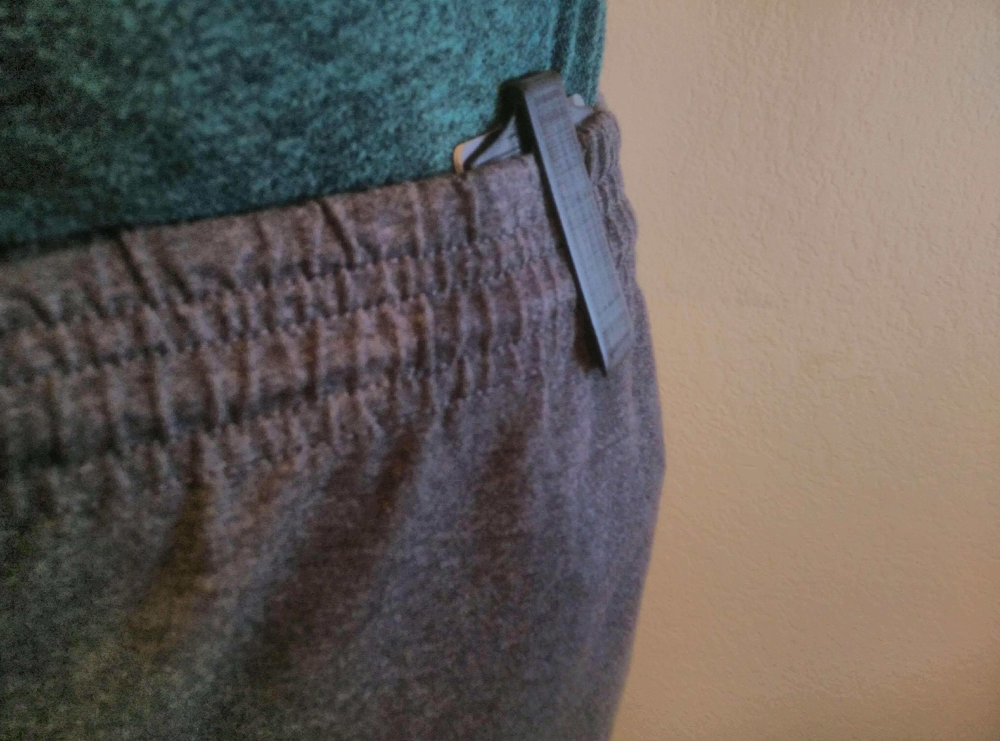

Cameron Alberg
Booty Card Holder
Booty is a card holder than ensures you never carry more than you need to. It can hold up to three cards, and was created as part of an interdisciplinary 3D printing product design class combining business, industrial design, and engineering
Cameron Alberg, Ryan Brown, Emily Chichlowski
My Role: Created CAD models, optimized designs for 3D printing, tested prototypes
Skills: Concept Generation | User Research | Rapid Prototyping | Material Testing | Ergonomic Design

Demo of Booty's secureness while highly active
Why
How can people carry essential items without needing cumbersome accessories?
When on the go, people often don’t have anywhere to store their credit cards and ID without needing to carry a purse/wallet or wear an outfit that has pockets. Purses and wallets can be easily stolen or lost and recent fashion trends don’t typically include pockets, especially for women (e.g., jeggings, leggings, dresses, etc.).
Process
In order to decide what features the Booty should have, we had to identify the user we were designing for. After talking to several people that liked the idea of not always having to carry a purse or wallet, we developed the following user persona: A social individual who desires efficiency when carrying their belongings. From going out to bars and restaurants to working out at the gym, they are on the go and don’t want to be bogged down by extra accessories.
Based on our user research, we focused on weight, comfort, and visibility. After experimenting with several filaments, we discovered a flexible filament that was much more comfortable than the typical plastic used with 3D printers. We performed stress tests on designs with varying thickness to find a balance between strength and weight. The final product was printed in black, as brighter colors could potentially attract the attention of pickpockets. Booty was designed to hold 3 cards instead of just 2 (ID and credit card) because many students also carry their student ID with them. We added a ridge at the top of the holder to prevent cards from falling out if fewer than three cards are used.
Rapid prototyping on Makerbot Replicator 2
Comfort and visibility test on sweatshorts
Storyboard of users with and without Booty (by Ryan Brown)
Final CAD Model (Solidworks)